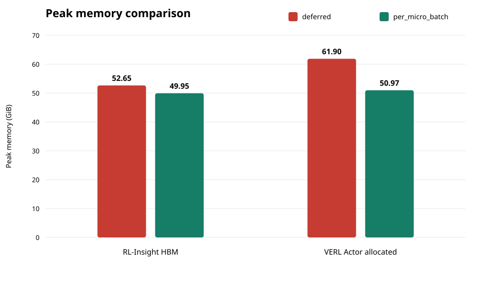
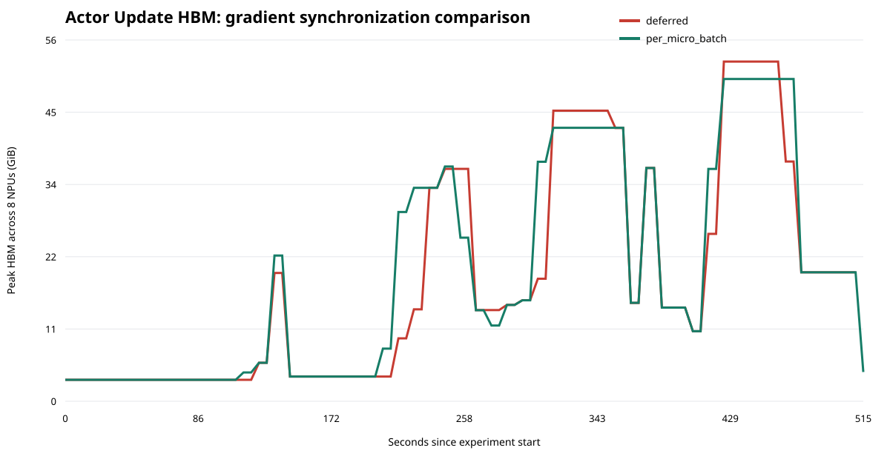

RL-Insight Actor Update 显存案例
8 × Ascend 910B3 · Qwen3 8.19B · GRPO · 同参数仅切换梯度同步方式
Actor 峰值下降10.93 GiB
相对降幅17.7%
RL-Insight 采样峰值差2.70 GiB
| 模式 | RL-Insight HBM | Actor 分配峰值 | Actor Update | Step | 吞吐 |
|---|---|---|---|---|---|
| deferred（故障注入） | 52.65 GiB | 61.90 GiB | 54.09 s | 122.13 s | 225.78 |
| per_micro_batch（原生优化） | 49.95 GiB | 50.97 GiB | 57.84 s | 126.64 s | 218.19 |


deferred 是为复现问题而注入的延迟同步故障；当前固定镜像默认采用 per_micro_batch。NPU Exporter 每 10 秒采样，整机曲线可能错过短时 backward 尖峰，因此以 VERL Actor 分配峰值确认瞬时差异。